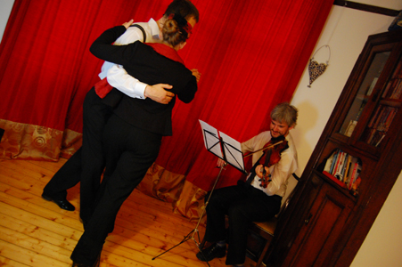

The typical sound of the tango is created by the bandoneon, an instrument related to the accordion but with a very different and distinct sound. Other common instruments are violin, piano and double bass.
The golden period for the tango was 1940-50, the age of the great orchestras, although some of the older music (as early as the 1920's) is very beautiful as well.

Tango music is typically referred to by the leader of the orchestra. Here follow a few orchestras whose music is very suitable for dancing. We roughly distinguish following categories:
The most well-known tango composer is Astor Piazzolla, the creator of the Tango Nuevo ("New Tango") genre. Tango Nuevo is more complex and less danceable than the tango from the golden era, but no less beautiful.
When you enrol in our classes, you can borrow CDs from our music library to become familiar with the different orchestras and improve your musicality.
Tango Tipica: Argentinian Tango in Glasgow  Last verified: 12 January 2014
Last verified: 12 January 2014